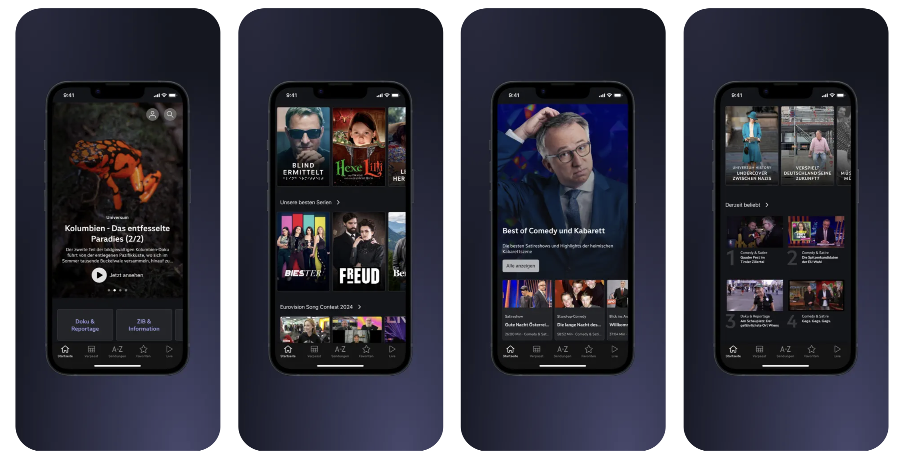
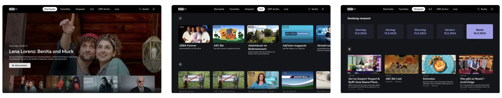
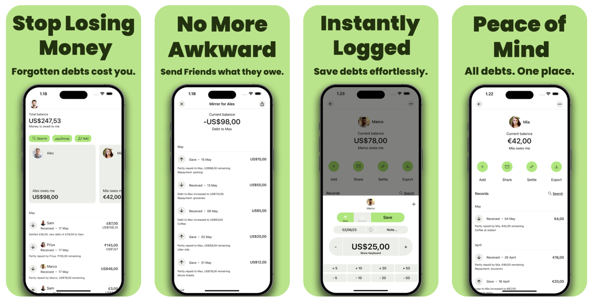

iPhone/iPad and tvOS app


Worked on ORF ON, the streaming platform of ORF — Austria’s public broadcaster and largest media provider — delivering live and on-demand video across iOS (iPhone/iPad) and tvOS (Apple TV).
Tech & architecture
- Swift, UIKit; reactive programming with RxSwift/RxCocoa
- Clean architecture: MVVM with Coordinators; modularization via Swift Package Manager
- Custom player stack: AVFoundation/AVPlayer with Bitmovin Player; HLS streaming
- Networking with URLSession/REST; feature flags via Firebase Remote Config; diagnostics via Firebase Crashlytics
- Release tooling with Fastlane/TestFlight; agile, sprint-based workflow
- Accessibility on iOS & tvOS (VoiceOver, tvOS Focus Engine)
What I owned & solved
- Took full ownership of many features end-to-end, often being the first to implement them on iOS before Android, then sharing findings and implementation approaches with the Android team to keep cross-platform consistency
- Contributed significantly to a major relaunch (design overhaul, component library, shared iOS/tvOS code paths)
- Redesigned and implemented the most critical screen of the app — the Player Page — as part of the relaunch, among many other major views and screens, ensuring performance, usability, and accessibility for millions of viewers.
- Designed/implemented reactive data pipelines to remove race conditions and improve main-thread responsiveness
- Integrated and customized the video player stack to improve time-to-first-frame and seek smoothness across devices
- Hardened error handling, background refresh, and caching for resilient playback and smoother UX
- Led accessibility upgrades (VoiceOver labels/traits, Focus Engine tuning)
- Partnered with Design, Backend, and QA; drove code reviews and mentoring to keep quality and velocity high
Highlights
- Relaunched the apps as ORF ON (successor to ORF-TVthek), shipping on both iOS and tvOS
- Ongoing delivery of new features and performance improvements after launch
- Production stack centered on Swift + RxSwift/RxCocoa, MVVM/Coordinators, and AVFoundation/Bitmovin
iPhone and iPad app

Built the Qixxit iOS app from scratch with one teammate — an intermodal travel planner for Germany and Europe.
Tech & architecture
- Swift-only codebase, VIPER modules, strongly typed networking (REST/URLSession)
- Functional/reactive flows with ReactiveSwift and ReactiveCocoa
- WebSocket-based results stream for trip searches; Google Maps with custom overlays; Push Notifications
- Apple Pay integration; Firebase for Remote Config (and later storage/sync)
- CI/release tooling with Fabric and CircleCI
What I owned & solved
- Designed the sorting & filtering pipeline for itineraries on a continuous socket feed. Results arrived incrementally while users could change filters/sort at any time; I modeled filters and sorters as composable reactive properties and combined them via ReactiveSwift so each update — either from the backend or the UI — triggered deterministic recomputation and smooth UI updates. The approach scaled as we added new criteria and remained easy for teammates to extend.
Recognition & partnerships
- Featured multiple times by Apple; partnered with Apple during the Apple Pay launch in Germany (Dec 2018)
Note: After I left the company, QT Mobilitätsservice GmbH (Qixxit) was acquired and the project was later discontinued; the Qixxit app is no longer available on the App Store.
iPhone/iPad app

My own app, live on the App Store with over 420 ratings and a 4.5★ average. The app includes in-app purchases and generates recurring monthly revenue. Everything is built and managed by me — from coding and architecture to screenshots, design, and App Store Optimization (ASO with keywords).
The idea of the app is to have a place to log all of your borrowings with your friends, so you never forget who owes to whom.
- Completely written in Swift
- Log and split expenses with friends; instant one-tap tally sharing
- Sync across devices with Firebase backend
- Multi-account support (similar to Instagram)
- Apple Sign-In and biometric authentication (Face ID/Touch ID)
- Core Data for offline reliability
- Subscriptions and non-consumable IAPs with promotion support
- Haptic feedback, 3D Touch Quick Actions, simple one-screen design
Consulted with Apple experts at a closed Developer event, applying their feedback to improve UX and UI. Continuously updated over 9+ years, adding new features and refining design. Generates steady monthly revenue with a growing user base.
iPad app

My own app, live on the App Store.
The goal of the Cortex app is to structure and organize your notes so they’re easy to find.
It uses a mixed organizational model: folders and tags, so a single note can live in multiple folders at once — no manual restructuring needed.
- Completely written in Swift
- VIPER architecture
- Text analysis with IBM Watson Natural Language Understanding (NLU) API
- Advanced search with
NSLinguisticTagger
- Core Data
- Consumable In-App Purchases
For tagging, I use IBM Watson’s NLU (Concepts, Entities, Categories) to suggest relevant tags to the user.
For advanced search, NSLinguisticTagger uses lemma and language schemes — enter “walk” and it can match “walking” or “walked”, and it works across languages.
iPhone and Apple Watch app

My own app, live on the App Store.
The idea behind the app is to help you focus on the work required to reach your goals. Instead of fixating on the outcome, you estimate the daily/weekly time you need to put in and focus on that. This is your process — keep doing the process, and the results follow.
The app also has an Apple Watch companion, including support for all complications.
- Completely written in Swift
- Widgets
- Core Data
- Local notifications with reminders
- Non-consumable In-App Purchases
- Promoted In-App Purchases
iPhone app

My own app, live on the App Store.
WordBook is your own dictionary for saving, learning, and refreshing words with card-based practice. You can also save audio for pronunciation.
- Completely written in Swift
- AVFoundation
- Core Data
- Non-Consumable In-App Purchases
Search is supported in both languages.
iPhone and iPad app

My own app, live on the App Store.
!Fragmenter is a social networking app - online diary.
- Completely written in Swift
- User authentication
- RESTful API
- 3D Touch Quick Action shortcuts
- Dark mode
iPhone and iPad app

My own app, live on the App Store.
The app records your voice and plays it with different sound effects.
- Completely written in Swift
- AVFoundation